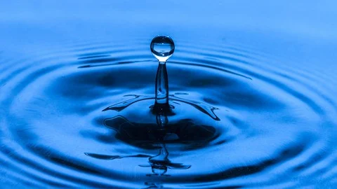
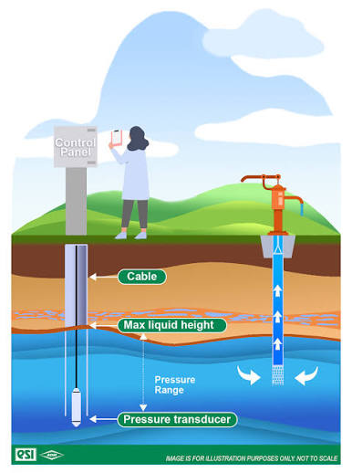
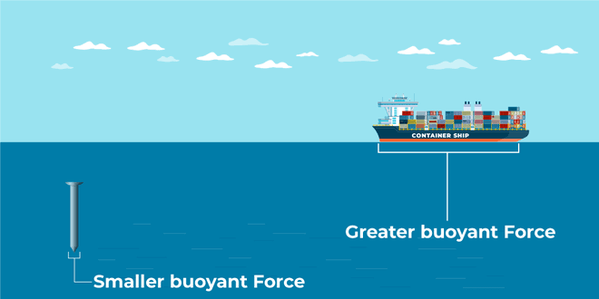
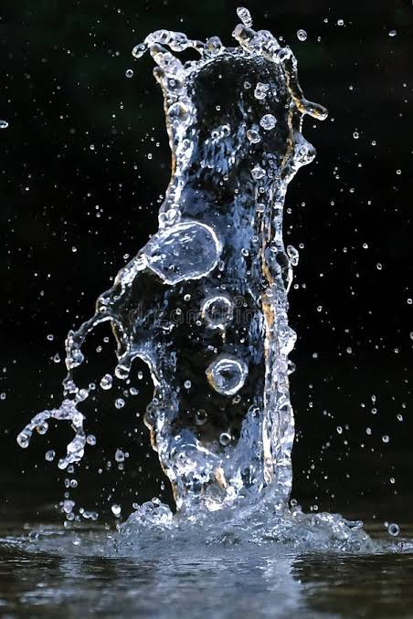

Future Paths in Fluid Mechanics
Fluid Mechanics connects the fundamental behaviour of liquids and gases to the design and operation of real-world systems.
From understanding pressure and buoyancy to analyzing flow and operating machinery, these concepts provide the foundation for solving engineering problems across energy, transportation, infrastructure, environmental science, and modern industry.
01. Introduction and Fluid Properties

Understanding fluid properties is the foundation of Fluid Mechanics. Properties such as density, viscosity, surface tension, and compressibility determine how fluids behave under different conditions and how they interact with their surroundings.
Chemical & Process
Understand fluid behaviour during mixing, pumping, processing, and transportation.
Petroleum & Energy
Study the properties of crude oil, natural gas, fuels, and other industrial fluids.
Aerospace
Understand how air and other fluids behave around aircraft and propulsion systems.
Understanding fluid properties provides the foundation for predicting fluid behaviour and selecting suitable fluids for different engineering applications (including Environmental, Biomedical, and Industrial Manufacturing).
02. Hydrostatic Pressure

Hydrostatic pressure describes the pressure exerted by a fluid at rest. Understanding how pressure varies with depth and fluid properties is essential for designing structures and systems that safely contain or withstand fluids.
- Civil & Structural Engineering — Design dams, reservoirs, retaining structures, and water tanks to withstand fluid pressure.
- Marine Engineering — Understand the pressure experienced by submarines, underwater structures, and diving equipment.
- Hydraulic Engineering — Design water storage and distribution systems that operate under different pressure conditions.
- Geotechnical Engineering — Analyze groundwater pressure and its effects on soil, foundations, and retaining walls.
- Industrial Manufacturing — Design pressure vessels, storage tanks, and equipment used to contain liquids.
- Oceanography — Study how pressure changes with depth in oceans and other bodies of water.
03. Hydrostatic Thrust
Hydrostatic thrust is the resultant force exerted by a fluid at rest on a submerged surface. Understanding its magnitude and point of application is essential when designing structures exposed to fluid pressure.
Dam & Reservoir
Calculate the forces acting on dam walls and other water-retaining structures.
Hydraulic Structures
Design sluice gates, floodgates, locks, and other structures exposed to water pressure.
Offshore & Marine
Analyze forces on submerged surfaces of ships, underwater equipment, and installations.
04. Buoyancy and Stability

Buoyancy explains why objects float or sink, while stability describes their ability to return to equilibrium after being disturbed. Together, these concepts are essential for understanding the behaviour of floating and submerged bodies.
- Naval Architecture — Design ships and boats that can float safely and maintain stability under different loading conditions.
- Offshore Engineering — Design floating platforms, offshore wind turbines, and other marine structures.
- Submarine Engineering — Control the buoyancy and stability of underwater vehicles.
- Aerospace Engineering — Apply buoyancy principles to lighter-than-air vehicles such as balloons and airships.
- Marine Research — Design floating instruments, research vessels, and autonomous underwater vehicles.
- Civil & Hydraulic Engineering — Assess the buoyancy and stability of floating structures and submerged installations.
05. Relative Equilibrium of Fluids
Relative equilibrium describes the behaviour of fluids that remain at rest relative to a moving or accelerating container. It helps explain how fluid surfaces and pressure distributions change when the container accelerates or rotates.
Automotive Engineering
Understand fluid movement in fuel tanks, braking systems, and vehicle components during acceleration.
Aerospace Engineering
Analyze liquid behaviour in fuel tanks and other critical fluid systems under extreme acceleration.
Centrifugal Equipment
Understand fluid behaviour in rotating containers and related industrial processing equipment.
06. Fluids in Motion

Fluid motion focuses on how liquids and gases move and how their velocity, pressure, and other properties change during flow. These principles help explain the behaviour of fluids in both natural environments and engineered systems.
- Aerodynamics — Understand airflow around aircraft, vehicles, and buildings.
- Hydraulic Engineering — Study water movement in rivers, canals, drainage systems, and irrigation networks.
- Mechanical Engineering — Analyze fluid flow in pipes, ducts, cooling systems, and machinery.
- Environmental Science — Investigate the movement of air and water, including pollutant transport and natural circulation.
- Biomedical Engineering — Study blood flow and fluid movement within the human body.
- Energy Engineering — Understand the flow of fluids through turbines, heat exchangers, and power-generation systems.
07. Analysis of Fluid Flow
Fluid flow analysis uses mathematical principles to describe and predict the behaviour of moving fluids. It allows engineers to investigate flow patterns, pressure changes, energy losses, and the forces acting on objects and systems.
CFD Simulation
Simulate fluid flow and heat transfer to investigate complex engineering problems without physical testing.
Aerospace & Automotive
Analyze airflow around aircraft and vehicles to improve aerodynamic performance and efficiency.
Civil & Environmental
Analyze water distribution, drainage, river flow, and flood behaviour for structural safety.
08. Fluid Machinery
Fluid machinery involves devices that transfer energy between fluids and mechanical systems. Pumps, turbines, compressors, and fans are essential components of modern infrastructure, manufacturing, transportation, and energy production.
- Energy Generation — Use hydraulic turbines to convert the energy of flowing water into mechanical power for electricity generation.
- Water Supply & Treatment — Use pumps to transport water through distribution networks and treatment facilities.
- Oil & Gas Industries — Employ pumps and compressors to transport fluids and gases through pipelines and processing facilities.
- Aerospace Engineering — Apply compressors, turbines, and pumps in aircraft engines and propulsion systems.
- Manufacturing & Industrial Processing — Use pumps, fans, and compressors in cooling, ventilation, and production systems.
- Agriculture — Use irrigation pumps and water-lifting systems to support agricultural production.
From principles to engineering applications, mastering Fluid Mechanics equips you with the tools needed to shape modern infrastructure and technology.